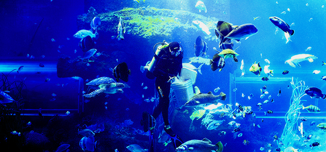
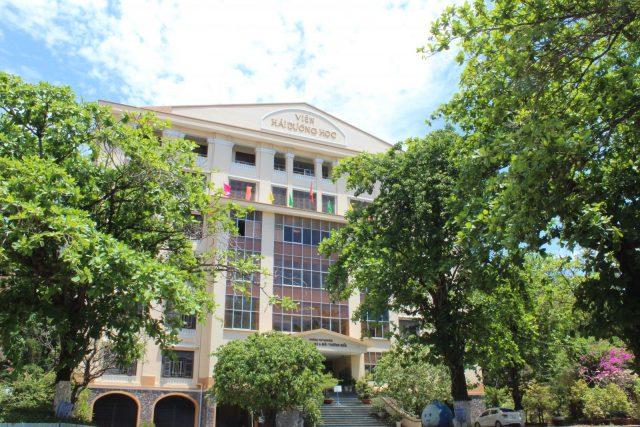
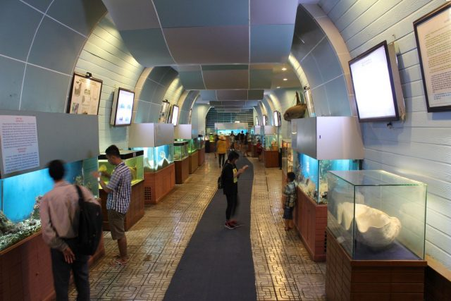
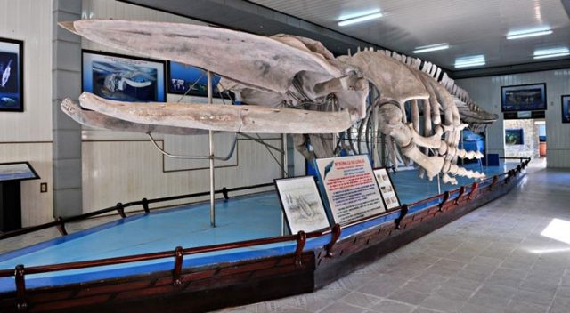
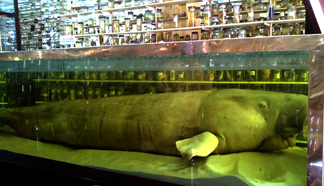
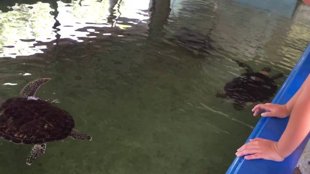

THAM QUAN VIEN HAI DUONG HOC
Được biết đến là một cơ sở nghiên cứu khoa học ra đời sớm nhất ở Việt Nam, Viện Hải dương học nằm cách trung tâm thành phố Nha Trang 6 km là nơi chuyên nghiên cứu tập tính, lối sống của sinh vật biển. Viện Hải dương học Nha Trang được thành lập năm 1923 dưới sự quản lý trực tiếp của người Pháp, mãi đến năm 1952 mới giao lại cho người Việt quản lý.Viện Hải dương Nha Trang nằm trong hệ thống các viện nghiên cứu chuyên ngành của trung tâm khoa học tự nhiên và công nghệ quốc gia Việt Nam.

ảnh minh họa
Lý giải về sự đa dạng sinh học ở biển Nha Trang, các nhà khoa học cho biết nhờ vị trí địa lý và đặc điểm tự nhiên đặc thù biển Nha trang có hai dòng biển nóng và dòng biển lạnh giao nhau. Dòng biển nóng từ khu vực xích đạo di chuyển lên, dòng biển lạnh từ phương Bắc chảy xuống và gặp nhau ở biển Nha Trang tạo nên môi trường sinh sống ôn hòa thuận lợi cho các loài sinh vật biển. Nhờ vậy sự đa dạng sinh học ở đây rất cao, các loài cá thường di chuyển về đây để sinh sản, hệ thống thực vật biển cũng rất phong phú. Chính sự đa dạng, phong phú đó là cơ sở cung cấp nguồn cứ liệu sống cho công tác nghiên cứu của các nhà khoa học.

ảnh minh hòa
ảnh minh hòa
Bảo tàng sinh vật biển và Bảo tàng hải dương học là 2 khu vực sẽ đem đến cho bạn nhiều bất ngờ và trải nghiệm thú vị. Bảo tàng sinh vật biển là nơi trưng bày các mẫu vật của các loài sinh vật biển. Bạn sẽ được chiêm ngưỡng mãn nhãn hơn 20.000 mẫu vật của 4.000 loài sinh vật biển khác nhau. Ngoài ra bảo tàng còn trưng bày nhiều mẫu vật của các sinh vật nước ngọt được sưu tầm ở vịnh Thái Lan, biển Đông, Campuchia.

ảnh minh hòa
Bảo tàng viện Hải dương học nổi tiếng với những bộ mẫu vật “khủng”. Nếu bạn chỉ được ngắm những chú cá voi khổng lồ, những bộ xương hóa thạch khổng lồ qua ti vi, mạng internet thì đến đây bạn sẽ được trực tiếp mục sở thị bộ xương cá voi khổng lồ dài tới 26 m, cao 3 m. Và thêm nhiều bộ mẫu vật lớn khác. 
ảnh minh hòa
Hiện nay số lượng bò biển không còn nhiều, nên rất cần được nghiên cứu và bảo tồn. Chúng còn có một tên gọi khác là mỹ nhân ngư, loài nay có tuổi thọ khá cao (từ 60 – 70 năm). Trong Viện hảo dương học có lưu giữ và nghiên cứu một bộ xương bò biển.

ảnh minh hòa
Phía ngoài theo lối đi vào, ta còn được ngắm nhìn các loài thủy sản biển nuôi trong bể lớn và bể kính như: rùa biển, cá mập, rắn biển, các loài nhuyễn thể… rất sống động và cuốn hút.

ảnh minh hòa